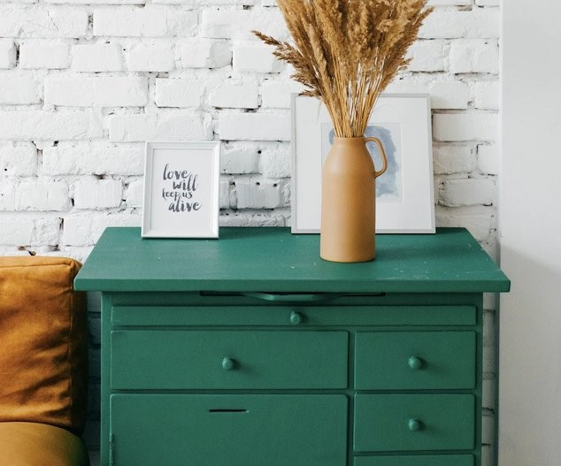

Shift the overall look and feel by adding these wonderful touches to furniture in your home
Ever been in a room and felt like something was missing? Perhaps it felt slightly bare and uninviting. I’ve got some simple tips to help you make any room feel complete.
Michelle Appleton
28 Jun 2020
SHARE
SHARE